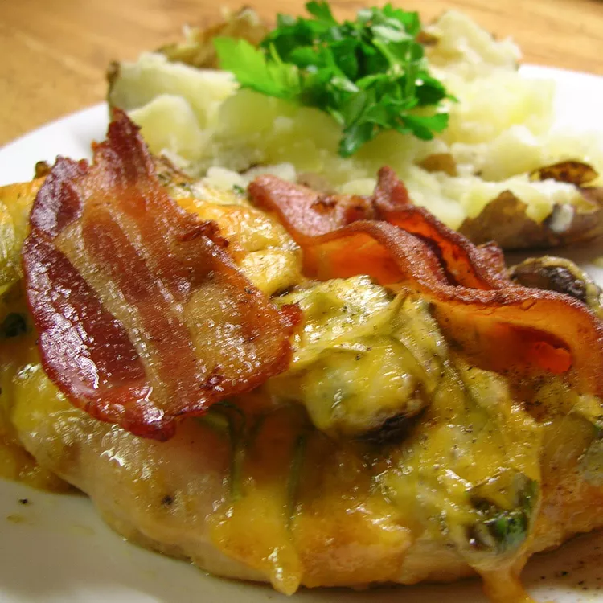

Alice Chicken

Description
In this copycat recipe, marinated chicken breasts are broiled with bacon and cheese,
topped with sautéed mushrooms, and drizzled with honey mustard dressing, just like
the Alice Springs chicken dish at a popular restaurant. This is a fantastic way to
turn plain broiled chicken into something special!
Ingredients
- 4 skinless, boneless chicken breast halves
- 5 fluid ounces of Worcestshire sauce
- 8 slices of bacon
- 2 tablespoons butter
- 8 ounces fresh mushrooms sliced
- 1(8 ounce) package Monterey Jack cheese, shredded
- 1/2 cup honey mustard salad dressing
Steps
- Place chicken into a glass dish or bowl. Poke chicken several times with a fork;
pour in Worcestershire sauce and turn chicken until coated. Cover and refrigerate
for about 1 hour.
- Cook bacon in a deep skillet over medium-high heat until evenly browned,
6 to 8 minutes. Drain on a paper towel-lined plate.
- While the bacon is cooking, melt butter in a small skillet over medium heat. Add
mushrooms and sauté until soft, about 10 minutes.
- Set an oven rack about 6 inches from the heat source and preheat the oven's broiler.
- Remove chicken from marinade and shake off excess. Discard remaining marinade.
Place chicken into a baking dish.
- Broil chicken in the preheated oven until no longer pink in the center and the juices
run clear, about 5 minutes per side. An instant-read thermometer inserted into the
center should read at least 165 degrees F (74 degrees C). During the last few minutes
of cooking, top each breast with 2 slices bacon and 2 ounces Monterey Jack cheese.
- Top chicken breasts with sautéed mushrooms and drizzle salad dressing over top.